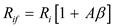

The closed loop gain of the amplifier is,
The gain of the amplifier is, A = 1000 V/V.
The feedback factor is, .
Substitute  for
for  and
and  for
for  in the equation.
in the equation.
Thus, the closed loop gain of series shunt feedback amplifier  is.
is.
The closed loop gain of the amplifier is,
The gain of the amplifier is, A = 1000 V/V.
The feedback factor is, .
Substitute for and for in the equation.
Thus, the closed loop gain of series shunt feedback amplifier is.
The input resistance of the closed loop amplifier is,
.
The input resistance of a series shunt feedback amplifier is .
Substitute for  , for
, for  and
and  for
for  in the equation.
in the equation.
Thus the input resistance of the closed loop series shunt feedback amplifier is.
The input resistance of the closed loop amplifier is,
.The output resistance is .
Substitute  for
for  ,
,  for
for  and
and  for
for  in the equation.
in the equation.
Thus the output resistance of the closed loop series shunt feedback amplifier  is
is
.